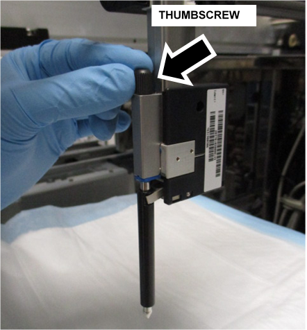
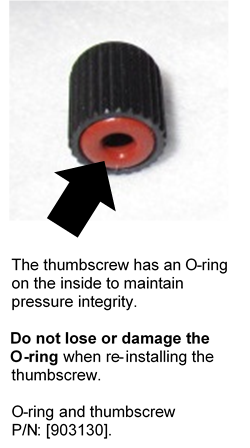
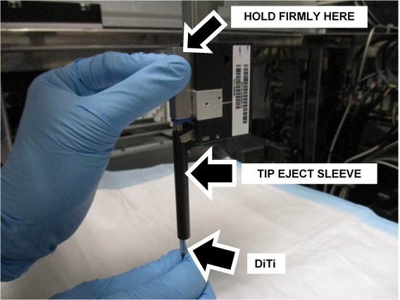
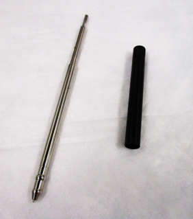
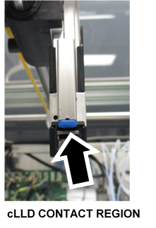
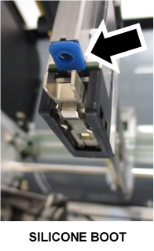
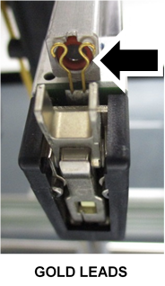
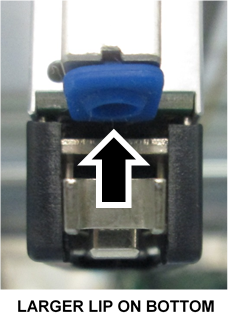
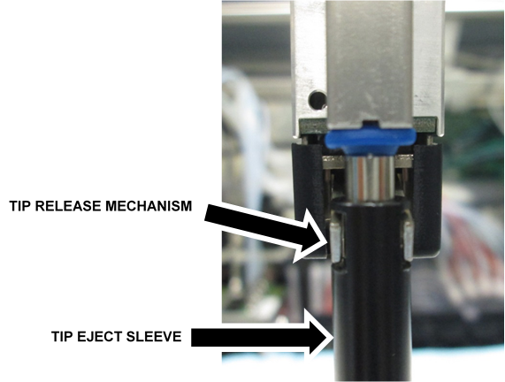

Pipettor DiTi Cleaning
When to Clean the DiTi
- Clean the DiTi, if excessive VVFS flags are generated (typically > 2.5% per 2000 tests)
Perform Pipettor DiTi Cleaning Procedure before replacing the pipettor. (Check the One-Day Health Report.) - cLLD
 Capacitive liquid level detection is susceptible to droplets on the walls of smaller reagent vessels (100 TK).
Capacitive liquid level detection is susceptible to droplets on the walls of smaller reagent vessels (100 TK).
Use caution when handling to minimize droplets. - Incorrect TCR Target capture reagent—An assay-specific reagent added as part of specimen pipetting. Carousel positioning can cause a tip to scrape the bottle opening as it enters.
This can create an LLD High event. Ensure TCR carousel teaching and bottle position are accurate. - Clean the DiTi, when troubleshooting issues related to capacitive level detection
Parts and Materials Required
- Proper PPE
- Panther Tool Kit
- Compressed Air
- Isopropyl Alcohol
- Lint-free cloth/wipes
- (If required) O-ring and thumbscrew
Time Required
- 60 minutes
Procedure
Instructions to manually clean the Pipettor DiTi and DiTi Sleeve.
- Shutdown the Panther System and PC.
- Lay bench pad(s) under the pipettor arm to prevent parts from falling into the system.
- Manually move the pipettor above the bench pads.
- Loosen and remove the pipettor thumbscrew.


- Firmly hold the pipettor.

- Pull the DiTi down from the pipettor to remove the DiTi and the DiTi Sleeve.

Note—Raise the pipettor if necessary. - Clean the DiTi and the Tip-Eject Sleeve.

- Wipe the DiTi with isopropyl alcohol and a lint-free cloth/wipe.
- With compressed air, clear out dust and debris from the inside of the Tip-Eject Sleeve.
- Check the sleeve and internal bore of the DiTi are clear of debris and dust.
- Inspect and clean the cLLD contact.

- Remove and clean the silicone boot.
Note—Gently pull the silicone boot off the leads, taking care not to rip or tear the boot. 
- Gently clean the gold leads with isopropyl alcohol and a lint-free cloth/wipe.
- Allow to air dry prior to reassembly.

- Reinstall the silicone boot over the gold leads.
Note—Ensure the orientation of the silicone boot is correct. There is a small tab on the top, and the round lip on the bottom of the boot is noticeably larger on the bottom. 
- Position the DiTi Sleeve under the silicone boot so the notches slide back into the Tip Release Mechanism.

- Slide the DiTi back into place until the shoulder is flush with the silicone boot.
Note—Use caution when inserting the DiTi, there are O-rings that can be damaged if the DiTi is inserted incorrectly. - Reinstall and finger tighten the thumbscrew.
- Remove and discard the bench pads.
Verification
Complete a Pipettor Pressure Integrity Test for ALL Pipettors (that had their DiTi cleaned and DiTi sleeve replaced)
 button at the top of the page to send feedback, comments, or change requests.
button at the top of the page to send feedback, comments, or change requests.